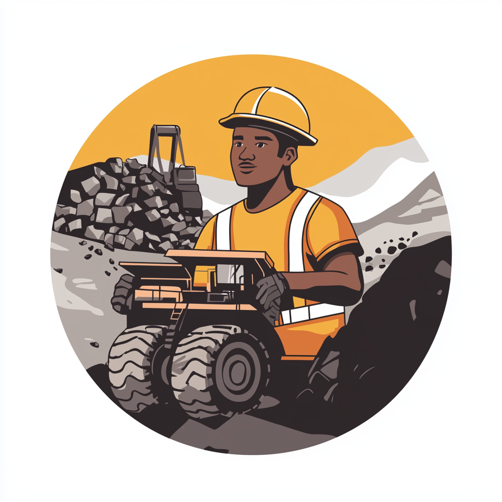

Featured Sectors

Mining
Zambia is Africa's second-largest copper producer, with vast deposits of copper, cobalt, emeralds, and other minerals. The mining sector offers significant opportunities for exploration, extraction, and value-added processing.
- Rich copper belt region
- Growing demand for cobalt in tech industries
- Potential for rare earth elements exploration
Agriculture
With abundant arable land and diverse climate zones, Zambia's agricultural sector presents immense potential for both commercial farming and agro-processing industries.
- 40% of Sub-Saharan Africa's water resources
- Ideal conditions for crops like maize, cotton, and tobacco
- Growing demand for organic and specialty products
Energy
Zambia's energy sector is ripe for investment, with a focus on renewable sources to meet growing domestic and regional demand for electricity.
- Vast hydroelectric potential
- Emerging solar and wind power projects
- Government incentives for clean energy initiatives
Other Promising Sectors
- Tourism and Hospitality
- Manufacturing
- Information and Communication Technology (ICT)
- Infrastructure Development
These sectors also present significant investment opportunities in Zambia. For more information on these and other sectors, please contact the Zambia Development Agency.